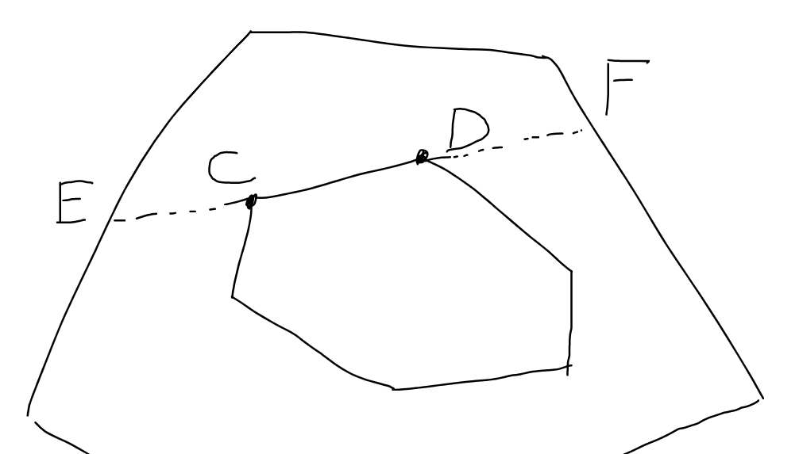

STEEL
Gọi \(A\) là tấm thép còn \(B\) là khuôn thép, tức là \(A\) chứa \(B\) và cần cắt \(B\) ra khỏi \(A\). Vì hai cạnh không kề nhau của \(B\) không tồn tại điểm chung trong \(A\) nên chi phí để cắt một cạnh phụ thuộc vào hai cạnh kề đã được cắt chưa.
Xét cạnh thứ \(i\) có hai đầu mút là \(C\), \(D\) (\(C\) giáp với cạnh liền trước, \(D\) giáp với cạnh liền sau). Tia \(CD\) cắt \(A\) tại \(F\), tia \(DC\) cắt \(A\) tại \(E\).
Ta thấy: nếu cắt \(CD\) sau cạnh liền trước sẽ giảm được \( \left| EC \right| \) chi phí, nếu cắt \(CD\) sau cạnh liền sau sẽ giảm được \( \left| DF \right| \) chi phí.
Bài toán tương đương: Cho một đồ thị có \(m\) đỉnh. Đỉnh \(i \left(1 < i \le m\right) \) có \(i - 1\) là đỉnh liền trước, đỉnh liền trước của \(1\) là \(m\). Đỉnh \(i \left(1 \le i < m\right) \) có \(i + 1\) là đỉnh liền sau, đỉnh liền sau của \(m\) là \(1\). Với mỗi đỉnh \(i\), gọi \(j\) là đỉnh liền sau của \(i\), ta phải thêm cung \( \left(i, j\right) \) với chi phí \(l_j\) hoặc cung \( \left(j, i\right) \) với chi phí \(r_i\). Đưa ra cách có chi phí lớn nhất sao cho đồ thị không có chu trình.
Ta có thuật toán tham lam như sau: Với mỗi cặp đỉnh \(i, j\) (\(j\) liền sau \(i\)) chọn cung có chi phí lớn hơn để thêm vào. Nếu sau khi thêm đồ thị có chu trình, ta chỉ cần đảo một cạnh bất kì, tìm cạnh tối ưu nhất để đảo.